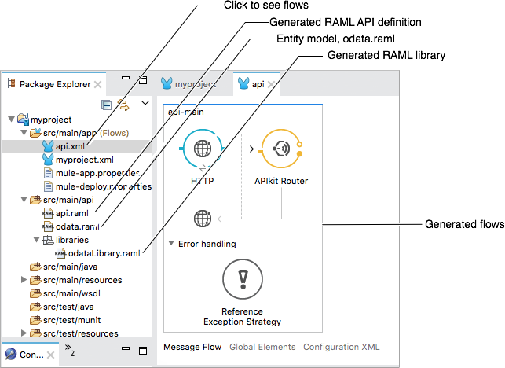

Creating an OData-Enabled API
The APIkit OData Extension supports OData (Open Data Protocol) Version 2 for creating HTTP-based data services. Through these services, you can query the data sources using HTTP. The APIkit OData Extension builds the services from the entity data model (EDM), which OData services uses to formalize its resource descriptions. You write the EDM in RAML using EDM-compatible data types to represent API entities. The APIkit OData Extension generates Mule flows to handle OData requests. After configuring a data source and adding endpoints to the flows, deploying the app exposes a RESTful API and an OData API accessible through different URLs. The OData MySQL example shows how to use an HTTP-based data service to query a MySQL database.
You can use the APIkit OData Extension to expose a legacy API as an OData API, orchestrate data before exposing it in Salesforce, or create a bidirectional OData API for Oracle, DB2, or Azure DB, for example.
Prerequisites
The following software is required for creating and using an OData-enabled API with APIkit:
-
OData Plugin
-
Mule EE 3.8.2 and later
-
Studio 6.1.2
-
Maven
The latest version of Maven is recommended.
Installing the APIKit OData Extension
Using Studio, you install the APIKit OData Extension in Studio as described in the following procedure.
To install the APIKit OData Extension:
-
From the Help menu in Anypoint Studio, select Install New Software.
-
In the Work with: field, select
APIkit for ODATA Update Site - http://studio.mulesoft.org/r5/apikit-for-odatafrom the drop-down.Studio displays a list of items to select.
-
Check the check box to update APIkit Studio Plugin.
-
Click Next.
An Install Remediation Page might appear.
-
Click Next, and click Next again to install the remedial software.
-
Accept the terms and conditions of the product, then click Finish.
-
Restart Studio to complete the installation.
Using the APIkit OData Extension
After installing the prerequisite software, perform the following high-level steps to use the APIkit OData Extension:
-
Define an entity data model named odata.raml, formatting the file as a RAML library.
You can download an example entity data model to see exactly how to create the file for this example.
-
Create a new Mule project in Studio.
Select the Add APIkit Components on the New Project dialog.
-
Copy the odata.raml to /src/main/api in Studio project explorer.
-
In the project explorer, right-click odata.raml and select Mule > Generate OData API from RAML Types.
The OData Extension generates the api.raml and OData library in src/main/api. Generated flows appear on the canvas when you select api.xml.
 -
Make sure to add the extensionEnabled="true" attribute/value to the apikit:config element in the XML view. This will ensure that the OData extension is picked up at runtime:
<apikit:config name="apiConfig" raml="api.raml" consoleEnabled="false" doc:name="Router" extensionEnabled="true"/>
-
Add logic and endpoints for querying a data source as described in the section "Implementing Endpoints".
-
Deploy the OData API.
Deploying an OData API
You can deploy the example app in a number of ways, including the following ones:
-
Locally
Right-click your project, then select Run As > Mule Application with Maven.
-
Right-click your project, then select Anypoint Platform > Deploy to Cloud.
Once deployed, you can also register the OData app in external OData consumer services like Salesforce.
OData mySQL Example
The OData mySQL example is a fully functional OData API packaged as a Maven project. In this example, the data source, the app, and the service is local. First, you install a MySQL database and load tables using a provided script. You import the compressed project into Studio, which includes a mySQL database driver. You can examine the flows to see how to implement endpoints needed accessing the data. You run the project, and finally, call the REST and OData services.
-
Install a MySQL database. Launch MySQL.
The Maven project you download in step 3 contains the mysql-connector-java-5.1.37.jar MySQL database driver, so you do not need to make a driver available to the project.
-
Download the example.sql script. Run the script using MySQL commands to load data into a database named apikit-odata-example.
-
Download and unpack the compressed Maven project,
apikit-odata-example-master.zip.The pom.xml and other project files appear in the apikit-odata-example-master directory.
-
In Studio, Select File > Import.
The Select dialog appears.
-
Select Anypoint Studio > Maven-based Mule Project from pom.xml. Click Next.
The Maven Configuration dialog appears.
-
Enter the path to your Maven installation directory, for example
/usr/local/Cellar/maven/3.3.9 -
Click Test Maven Configuration, and if the test is successful, click Next; otherwise, troubleshoot your Maven configuration.
The Import Mule Project dialog appears.
-
Browse to and select the POM file from the apikit-odata-example-master directory. Click Finish.
The test-drive project appears in the project explorer. APIkit OData Extension generates flows that appear in the canvas when you click api.xml in src/main/app in the project explorer.
-
In Studio, in mule-app.properties in src/main/app, set the following properties to access the local MySQL database:
ds.db.port=3306 ds.db.user=<your MySQL user name> ds.db.host=<your MySQL host name> ds.db.database=apikit-odata-example ds.db.password=<your MySQL password>
-
Run the API locally: Right-click the project, and select Run As > Mule Application with Maven.
You can now access the REST and OData Service.
Accessing the REST and OData Service
To run the API locally:
-
Right-click the project, and select Run As > Mule Application with Maven.
-
Access the REST and OData Service using the following URLs:
-
REST API:
/api -
OData API:
/api/odata.svcThe following examples cover a few of the many REST calls and OData queries you can use.
-
Retrieve a List of Customers
Call the REST API to retrieve the list of customers: http://localhost:8081/api/customers
The response is:
{
"entries": [
{
"ContactName": "Maria Anders",
"ContactTitle": "Sales Representative",
"CompanyName": "Alfreds Futterkiste",
"CustomerID": ""
},
{
"ContactName": "Maria Anders",
"ContactTitle": "Sales Representative",
"CompanyName": "Alfreds Futterkiste",
"CustomerID": "ALFKI"
},
Access a Description of the OData Service
Get information about the collections behind this service:
http://localhost:8081/api/odata.svc
The response is:
<service xmlns="http://www.w3.org/2007/app" xmlns:atom="http://www.w3.org/2005/Atom" xmlns:app="http://www.w3.org/2007/app" xml:base="http://localhost:8081">
<workspace>
<atom:title>Default</atom:title>
<collection href="customers">
<atom:title>customers</atom:title>
</collection>
<collection href="orders">
<atom:title>orders</atom:title>
</collection>
</workspace>
</service>
Get OData Service Metadata
The Service Metadata exposes the structure of OData service resources and its operations and EDM for a given service.
Get the metadata for HTTP Services example:
http://localhost:8081/api/odata.svc/$metadata
The response aligns with the odata.raml EDM you used to build the HTTP Services API example.
<edmx:Edmx xmlns:edmx="http://schemas.microsoft.com/ado/2007/06/edmx" Version="1.0"> <edmx:DataServices xmlns:m="http://schemas.microsoft.com/ado/2007/08/dataservices/metadata" m:DataServiceVersion="2.0"> <Schema xmlns="http://schemas.microsoft.com/ado/2008/09/edm" Namespace="odata2.namespace"> <EntityType Name="customers"> <Key> <PropertyRef Name="CustomerID"/> </Key> <Property Name="CompanyName" Type="Edm.String" Nullable="true" MaxLength="40" Unicode="false"/> <Property Name="ContactName" Type="Edm.String" Nullable="true" MaxLength="30" Unicode="false"/> <Property Name="ContactTitle" Type="Edm.String" Nullable="true" MaxLength="30" Unicode="false"/> <Property Name="CustomerID" Type="Edm.String" Nullable="false" MaxLength="5" Unicode="false"/> </EntityType> <EntityType Name="orders"> <Key> <PropertyRef Name="OrderID"/> <PropertyRef Name="ShipName"/> </Key> <Property Name="Freight" Type="Edm.Decimal" Nullable="true" Precision="3" Scale="3" Unicode="false"/> ...
Query the Data Source
Issue OData queries to get the list of customers in XML and JSON format.
http://localhost:8081/api/odata.svc/customers http://localhost:8081/api/odata.svc/customers?$format=json
Issue an OData query to get the tenth customer in the customer list:
http://localhost:8081/api/odata.svc/customers?$format=json&$top=1&$skip=10
The response is:
{
"d" : {
"results" : [
{
"__metadata" : {
"uri" : "http://localhost:8081/api/odata.svc/customers('BOTTM')", "type" : "odata2.namespace.customers"
}, "CompanyName" : "Bottom-Dollar Markets", "ContactName" : "Elizabeth Lincoln", "ContactTitle" : "Accounting Manager", "CustomerID" : "BOTTM"
}
]
}
}